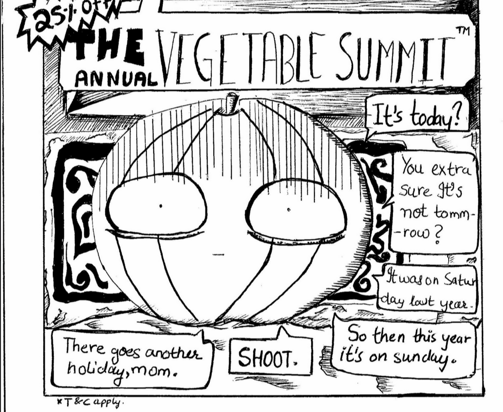

I have just made one game till now, for a game jam. I won't say its any good, but I'm proud of the effort I put in!
aka, the place everyone thinks of when they think of MIT. A place with many of my cherished memories. This took me around two semesters to make, a complete model of the Student plaza , made using photo references and texture scans that I took throughout the years. The original plan was to make a video game , but time constraints got the best of me, and I have left campus for my 8th semester internship. I figured this would be a good way to put the model to use. I also have rough models of block 19, and some props found around campus, like signs, railings, fences, fire extinguishers, etc.
These songs I have made during college years, I am planning to do a full concept album when I get time
I made this around 10th-11th standard (around 2018)
